AdaptiQ WMS è la piattaforma utilizzata per amministrare le operazioni di magazzino in conto terzi (logistica multi-mandante): ricezione merci, gestione delle giacenze, evasione degli ordini di spedizione e rendicontazione verso i clienti ("mandanti") che affidano la propria merce in stoccaggio.
Il sistema è composto da due ambienti distinti, con accesso e permessi separati:
/) dell'applicazione. Permette di gestire ricezioni, spedizioni, inventario, anagrafica clienti e configurazioni di sistema./portal. Permette la sola consultazione in tempo reale delle proprie giacenze e dello storico delle spedizioni evase.Il sistema opera all'interno di uno stack containerizzato Docker Compose, ottimizzato per garantire elevata disponibilità e transazionalità concorrente esente da anomalie di race condition:
[ Browser / Barcode Scanner / Smartphone ]
| HTTP (Porta 80)
v
[ Nginx Reverse Proxy ] ----> Rate Limiting: 5 req/min su login mandante, 30 req/s globale
|
v
[ FastAPI + Gunicorn Engine ] Multi-Worker Uvicorn (4 nodi paralleli)
| - JWT Session Cookies (HttpOnly, SameSite=Lax) separati per operatore e mandante
| - Hashing PIN/Password: PBKDF2-HMAC-SHA256 (100.000 iterazioni)
v AsyncPG Connection Pool
[ PostgreSQL 16 DB Engine ]
| - Advisory Lock (pg_advisory_lock) per inizializzazione schema atomica
| - Isolamento multi-tenant basato su merchant_id
L'interfaccia principale per gli operatori di magazzino è accessibile all'indirizzo radice (/), protetta da una schermata di blocco che richiede Nome Utente e Password (l'utenza admin viene creata automaticamente al primo avvio). L'interfaccia è organizzata in sei sezioni operative ("Fasi"), selezionabili dai pulsanti in alto, ed è progettata per l'uso prevalente tramite tastiera o lettore barcode industriale.
| Tasto | Funzione | Descrizione Operativa |
|---|---|---|
| F1 | Nuovo Documento | Apre il prompt per l'acquisizione del numero di documento di trasporto, verificando preventivamente che non sia già stato registrato o evaso per il mandante selezionato. |
| F12 | Switch Fase Documento | Alterna tra la fase di caricamento distinta previsti (DISTINTA DDT) e la fase di prelievo fisico a scaffale (PRELIEVO). |
| Invio | Conferma Scansione | Registra il codice digitato o scansionato nel campo Barcode/SKU. |
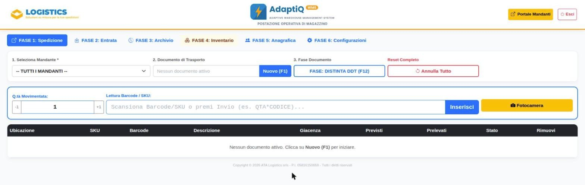
DDT-2026/104).QTA*CODICE, es. 5*8001122334455). Il motore blocca automaticamente l'inserimento se il barcode appartiene a un altro mandante.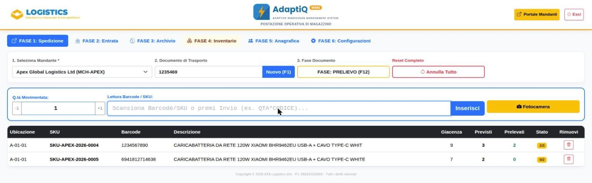
Il tab 2. Entrata consente la catalogazione dei carichi in arrivo da fornitore per conto di un mandante:
INBOUND) e quantità. Il campo SKU interno è opzionale.SKU-<CODICE MANDANTE>-<ANNO>-NNNN.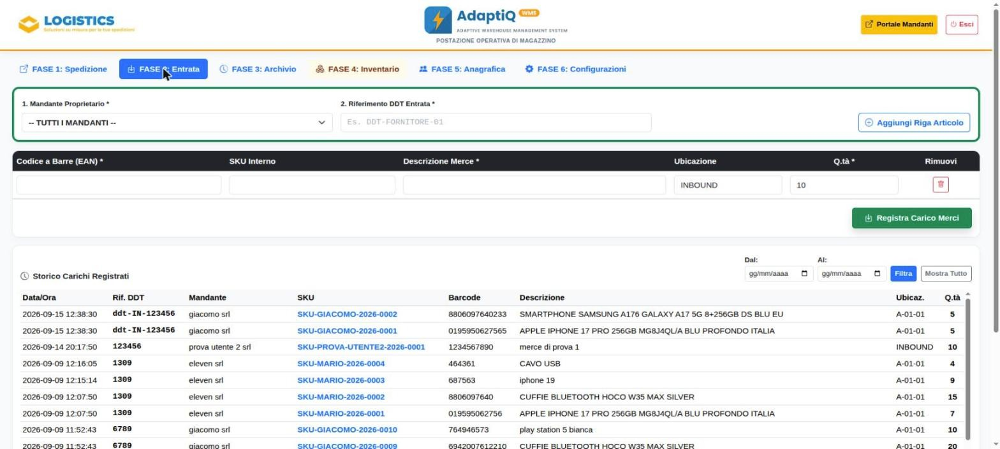
Elenca tutti gli ordini già evasi, filtrabili per mandante e per intervallo di date. Selezionando un ordine dall'elenco, il pannello di dettaglio mostra riga per riga SKU, barcode, descrizione, ubicazione e quantità previste/prelevate. Il pulsante Ristampa consente di riemettere il verbale di spedizione in formato A4 per un ordine già evaso.
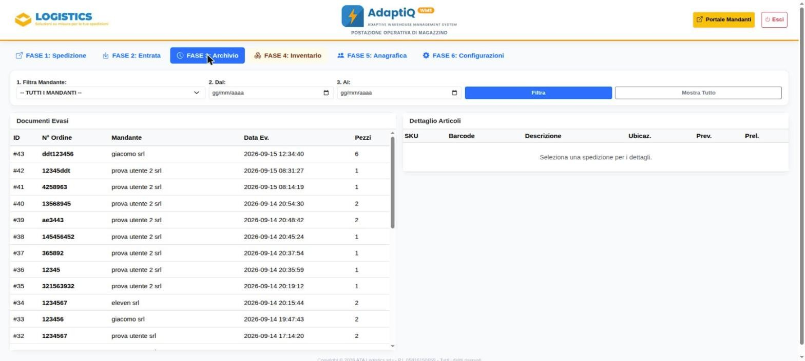
Il tab 4. Inventario offre una visibilità completa sullo stato dei magazzini fisici con ricerca istantanea (filtraggio su barcode, descrizione e mandante):
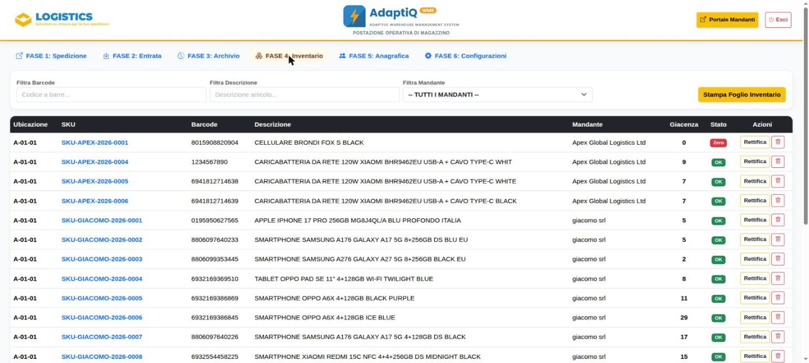
| Stato Visivo | Soglia Rilevata | Azione Richiesta |
|---|---|---|
| Disponibile | Giacenza > 20 unità | Flusso regolare, scorte di sicurezza garantite. |
| Scorta Bassa | Tra 1 e 20 unità | Richiesta di riordino o notifica preventiva al mandante. |
| Esaurito | 0 unità a scaffale | Articolo non prelevabile nei flussi di outbound picking. |
Tramite il comando Rettifica, l'operatore autorizzato può modificare la quantità reale specificando obbligatoriamente una causale (Conteggio Fisico Periodico, Merce Danneggiata, Eccedenza Reperita); ogni rettifica genera un movimento tracciato nello storico giacenze. Il comando Storno Referenza rimuove definitivamente un articolo (e la relativa giacenza) da un mandante, ma è bloccato se l'articolo risulta già incluso in spedizioni evase, per non alterare lo storico dei documenti già emessi. Il pulsante Stampa Foglio Inventario genera un report cartaceo A4 dell'elenco (filtrato o completo) delle giacenze.
Il tab 5. Anagrafica gestisce la scheda cliente dei committenti che affidano la merce in conto deposito.
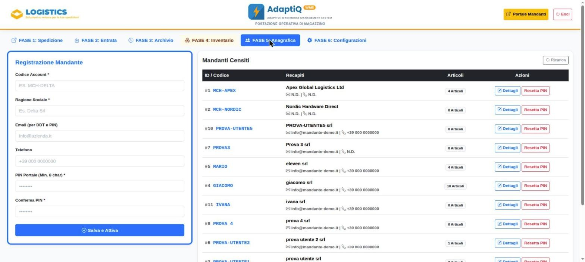
MCH-DELTA).Dall'elenco è possibile modificare ragione sociale/email/telefono, resettare il PIN d'accesso (forzando una nuova password minima di 8 caratteri, con invio automatico via email se l'indirizzo è registrato) e cancellare un mandante. La cancellazione è consentita solo se il mandante non ha più referenze attive a catalogo né documenti di spedizione storicizzati a suo nome, a tutela dello storico logistico e contabile.
La sezione è suddivisa in quattro sotto-schede.
Configura il server SMTP utilizzato dal sistema per inviare automaticamente i DDT finalizzati ai mandanti e le comunicazioni di credenziali/reset PIN: host, porta, utente e password di autenticazione, email e nome mittente pubblico, attivazione crittografia TLS/SSL, e l'URL pubblico del portale mandanti (inserito nelle email inviate ai clienti). Finché questi parametri non sono configurati correttamente, gli ordini vengono comunque evasi regolarmente ma le email non vengono inviate, con segnalazione esplicita a video.
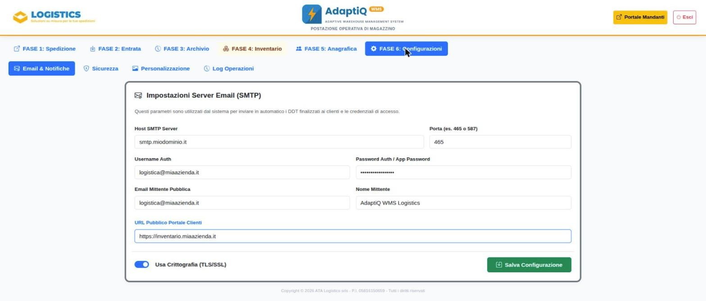
Permette di reimpostare direttamente la password dell'utente amministratore (admin) del terminale, senza necessità di conoscere quella precedente — utile in caso di smarrimento delle credenziali. Richiede la nuova password (minimo 6 caratteri) e la relativa conferma.
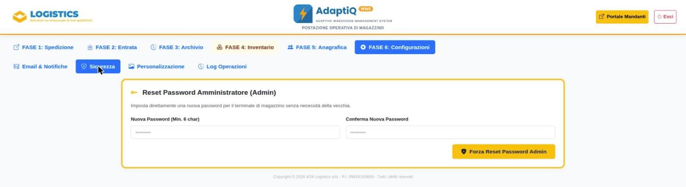
Consente di caricare i due loghi mostrati nell'intestazione del terminale e del portale ("Logo Logistics" e "Logo AdaptiQ WMS"), in formato PNG, JPEG o WEBP, fino a 3 MB. Il nuovo logo viene sostituito immediatamente su tutte le postazioni.
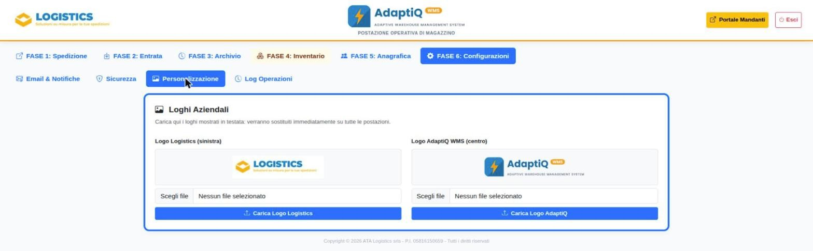
Registra in modo permanente tutte le operazioni sensibili o irreversibili compiute dagli operatori: cancellazioni, modifiche anagrafiche, reset o cambio password/PIN, modifiche alla configurazione SMTP, caricamento loghi. Per ogni voce sono riportati data/ora, operatore, tipo di azione, oggetto interessato ed eventuali dettagli. L'elenco è filtrabile per intervallo di date, a supporto di verifiche interne o ricostruzioni di eventi.
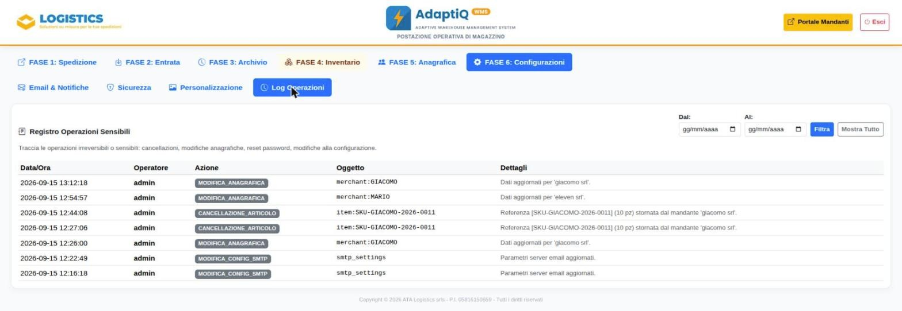
Accessibile alla rotta /portal, garantisce ai clienti finali la consultazione in sola lettura, aggiornata in tempo reale, dei propri stock e dello stato di avanzamento delle spedizioni. Il portale è disponibile in italiano e inglese, con selettore lingua ricordato dal browser.
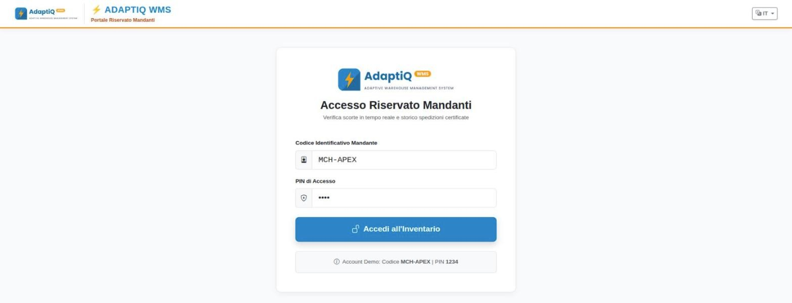
MCH-APEX) e PIN numerico, con token emesso tramite cookie HttpOnly immune da manipolazioni via script client.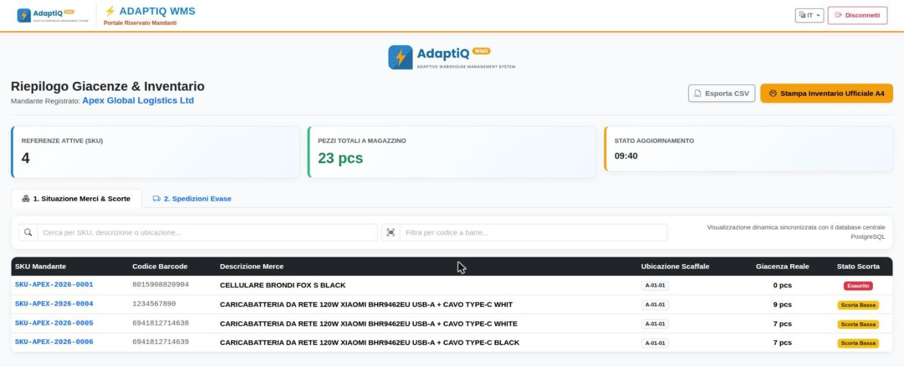
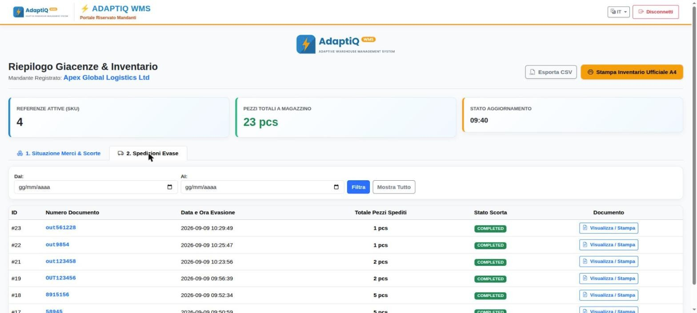
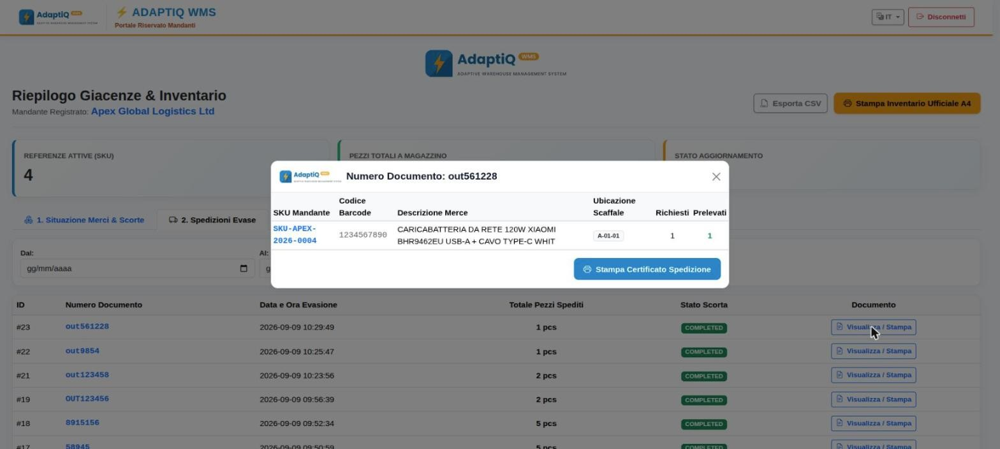
Operatori e mandanti utilizzano token JWT firmati veicolati su cookie HttpOnly separati (operator_token e adaptiq_token), con validità di 12 ore. Ogni azione sensibile compiuta dagli operatori resta tracciata e consultabile nella Fase 6 — Log Operazioni.
I processi di movimentazione sono isolati a livello transazionale PostgreSQL tramite clausola esplicita SELECT ... FOR UPDATE. Qualora due operatori tentassero di scaricare lo stesso articolo simultaneamente da due terminali differenti, il database serializza le operazioni evitando valori negativi o vendite fantasma (phantom reads).
Tutte le tabelle, chiavi esterne e dati storici risiedono sul volume persistente postgres_data. Di seguito i comandi da terminale Linux per eseguire il backup a caldo e il ripristino dei dati:
# Eseguire un backup completo SQL a caldo: docker exec -t adaptiq_db pg_dump -U adaptiq_user adaptiq_wms > backup_adaptiq_$(date +%Y%m%d).sql # Ripristinare un backup SQL esistente: cat backup_adaptiq_YYYYMMDD.sql | docker exec -i adaptiq_db psql -U adaptiq_user -d adaptiq_wms # Controllo log realtime container: docker compose logs -f --tail=30 web